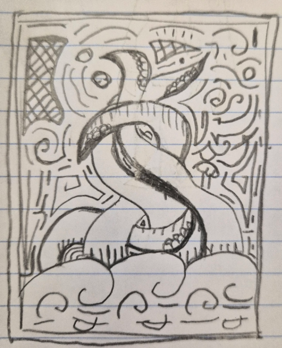

the world as we knew it.

"the world as we knew it." is a new alias of Juno Sillys that specializes in Midwest Emo / Folk Punk Music
"debut" is the first EP from "the world as we knew it." featuring 5 songs including "the world as we knew it." and "Wasting Away For 1000 Years"
Thats about it for now. reminder that this is a solo project, dont expect debut to be out in 2 seconds lol. expect demos, and more things soon!